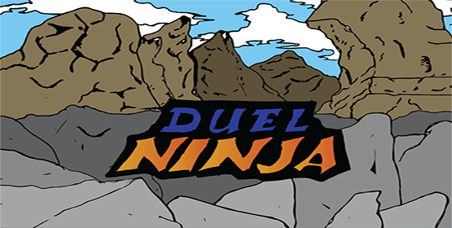

DuelNinja
Création d'un jeu de rôle stratégique dont le but est de battre sans adversaire en gérant un maximum ses attaques et ses ressources.
Actuellement en formation de développeur web à Passerelle Numérique (École Centrale de Marseille ), je recherche une alternance pour mettre en pratique mes compétences et en apprendre de nouvelles pour la suite mes études
Je suis quelqu'un de très motivé, curieux, autonome, polyvalent, grande capacité d'écoute, réactif. Autant de qualités que j'aimerais mettre à votre service.
Voici les différents projets réalisés durant mon année de formation.
Création d'un jeu de rôle stratégique dont le but est de battre sans adversaire en gérant un maximum ses attaques et ses ressources.

Site sur le thème d'accueil d'un festival dans le style brutaliste de type commerciale.
Le site est composé de 4 pages: Accueil, programmation, infos pratiques, contact .
Création de la page d'acceuil d'un site e-commerce statique de football, avec trois section utilisant seulement le HTML et le CSS.